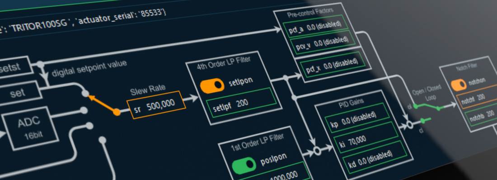

PiSoWorks Manual
Welcome to PiSoWorks documentation!
PiSoWorks is an application for controlling the piezo amplifiers, such as the NV200/D, from piezosystem jena GmbH.
Symbols and Signal Words Used
The following symbols are used in this manual and are designed to aid your navigation through this document:
Tip
Describes practical tips and useful information to facilitate the handling of the software.
Important
Describes important information and other especially useful notes, in which no dangerous or damaging situations can arise.
Attention
Indicates a potentially damaging situation. Failure to avoid this situation may result in damage to the product or anything nearby.
Caution
Describes a situation that may be dangerous. If this aspect is not avoided, light or minor injuries as well as damage to property could result.